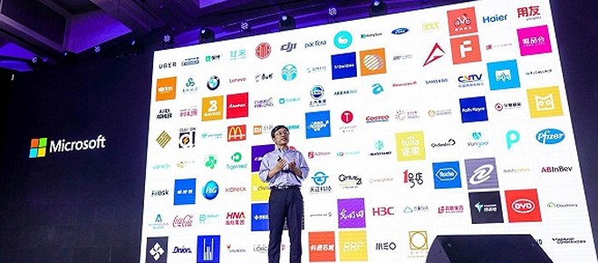

您当前所在位置：
主页
>
常见问题
雨后清风重装助手怎么样
更新时间：2018-05-15 浏览：100
一、使用好系统重装工具时为何要关闭杀毒？
由于好系统重装助手需要执行修改系统启动菜单，备份QQ浏览记录等操作。而某些杀毒将这些会将这些操作视为敏感操作，进而拦截软件行为。因此可能会导致软件流程无法顺利进行。进而致使重装失败。好系统重装助手纯净无毒，请各位放心使用。
一、使用好系统重装工具时为何要关闭杀毒？
由于好系统重装助手需要执行修改系统启动菜单，备份QQ浏览记录等操作。而某些杀毒将这些会将这些操作视为敏感操作，进而拦截软件行为。因此可能会导致软件流程无法顺利进行。进而致使重装失败。好系统重装助手纯净无毒，请各位放心使用。
一、使用好系统重装工具时为何要关闭杀毒？
由于好系统重装助手需要执行修改系统启动菜单，备份QQ浏览记录等操作。而某些杀毒将这些会将这些操作视为敏感操作，进而拦截软件行为。因此可能会导致软件流程无法顺利进行。进而致使重装失败。好系统重装助手纯净无毒，请各位放心使用。
一、使用好系统重装工具时为何要关闭杀毒？
由于好系统重装助手需要执行修改系统启动菜单，备份QQ浏览记录等操作。而某些杀毒将这些会将这些操作视为敏感操作，进而拦截软件行为。因此可能会导致软件流程无法顺利进行。进而致使重装失败。好系统重装助手纯净无毒，请各位放心使用。